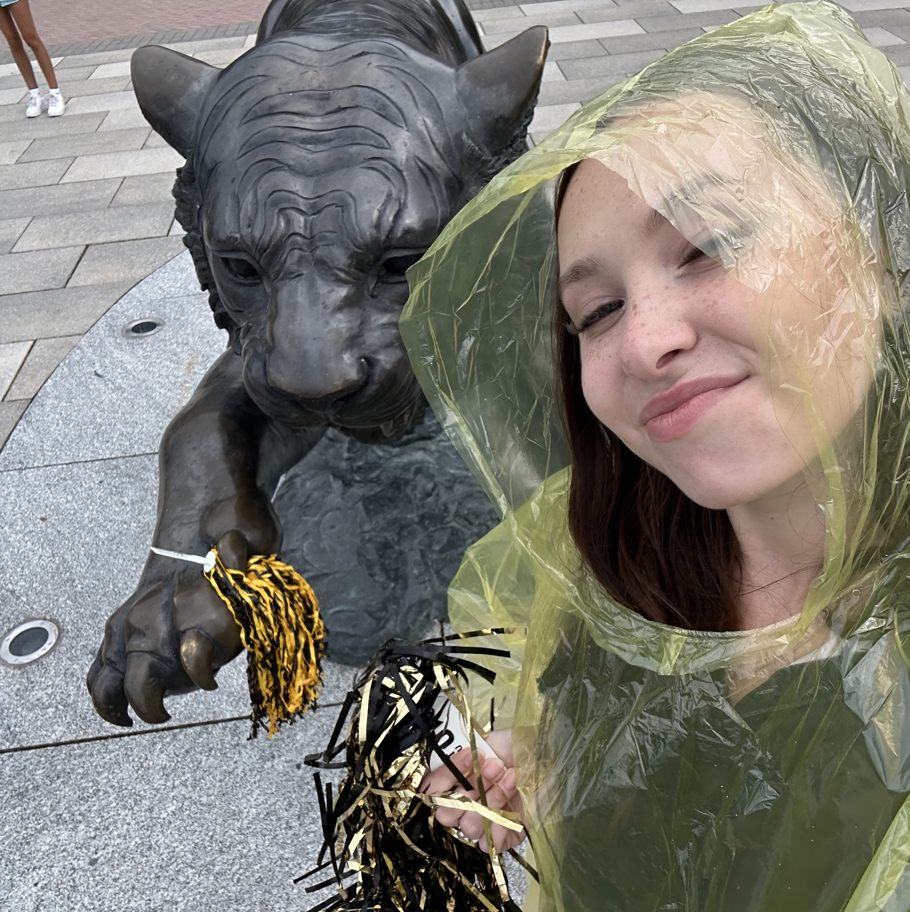

Now
About Me
Hi, I'm Angelika — a DMV-based professional passionate about the intersection of marketing, technology, and psychology. I think a lot about how humans make decisions, and I use data, research, and creative strategy to do something useful with that. Right now, that means chasing questions about AI's role in the future of advertising.
My Journey
Click any milestone to expand ↓

Marketing Campaigns
Hover to preview · Click to open PDF ↓


Professional Experience
- Supported rebranding efforts by developing digital content strategies
- Designed brand elements and social media content to strengthen brand identity across platforms
- Drove a nearly 200% increase in audience engagement through strategically aligned content
- Developed and executed digital marketing campaigns targeting prospective students and families
- Created social media content and promotional materials to increase awareness and engagement
- Collaborated on outreach initiatives that improved audience interaction and program visibility
- Oversaw daily operations of a residential community center and supervised student employees
- Coordinated community programs and events to enhance resident engagement
- Managed scheduling, training, and compliance while fostering a welcoming environment
- Conducted data collection, cleaning, and analysis; managed VR experimental simulations
- Developed Python programs to automate physiological data extraction and processing
- Co-presented findings at psychological conferences
Selected Projects
Independent study investigating the net financial impact of AI-generated ads, weighing cost reduction against long-term customer retention risk across common and luxury goods categories.
Determining the most significant emotional drivers of consumer engagement across content types — using my own social media as a live experimental platform.
Developed Python programs to streamline data cleaning and physiological data extraction in an active behavioral research lab.
Designed a brand extension concept grounded in e.l.f.'s brand equity and Gen Z consumer preferences; backed by market analysis evaluating brand fit and growth potential.
Critical analysis of American Eagle's viral campaign — evaluating brand alignment, audience reception, and cultural impact through a consumer behavior lens.
Data-informed campaign strategy to grow Coca-Cola's social media engagement among Gen Z consumers, presented as a full IMC proposal.
Designed a consumer product concept that analyzes hair type and health to generate personalized recommendations; built a full go-to-market strategy for segmented consumer groups.